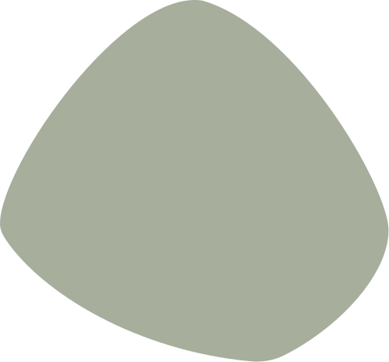

S firmou jsem spokojená. Dávám sem stříhat psa již 4 roky.
Psí salon v Chrudimi, kterému pejsci důvěřují
Péče o psy
se srdcem
Stříhání, koupání, trimování i výstavní úpravy všech plemen.



Salon vede Marie
Jmenuju se Marie Kasanová a nabízím jednotlivé i kompletní úpravy psího zevnějšku podle vašich přání a představ: stříhání, koupání, trimování, vyčesávání i výstavní úpravy, klidně podle fotky, kterou mi přinesete. Uvítám vás v domácím prostředí a upravím všechny psy od čivavy až po bernardýna, od obyčejného oříška až po výstavní krasavce, kteří se chystají na světové soutěže.
Nemám ráda prázdná slova, radši koukám na výsledky, a ty za mou prací stojí. Profesi se věnuju přes třicet let, jezdím na výstavy a soutěže u nás i v cizině, za úpravu psů jsem získala přes 70 pohárů a titulů a články o mé práci vyšly i v německých a francouzských časopisech.
Věřím, že budete spokojení a že se budeme vídat i dál, abychom z vašich čtyřnohých přátel dělali opravdové krasavce a elegány.
Poháry z groomingových soutěží
Přes 70 pohárů a titulů ze soutěží u nás i v cizině. Stejnou preciznost dostane každý pes, který ode mě jde do výstavního kruhu.
-
 Mistrovství ČR 2025
1. místo, kategorie teriéři
Mistrovství ČR 2025
1. místo, kategorie teriéři
-
 Grooming Cup Praha 2024
2. místo, ruční trimování
Grooming Cup Praha 2024
2. místo, ruční trimování
-
 Czech Grooming Open 2023
1. místo, pudli
Czech Grooming Open 2023
1. místo, pudli
-
 Mistrovství ČR 2022
3. místo, malá plemena
Mistrovství ČR 2022
3. místo, malá plemena
-
 Grooming Cup Praha 2021
2. místo, teriéři
Grooming Cup Praha 2021
2. místo, teriéři
-
 Czech Grooming Open 2019
1. místo, drsnosrstá plemena
Czech Grooming Open 2019
1. místo, drsnosrstá plemena
-
 Mistrovství ČR 2018
3. místo, pudli
Mistrovství ČR 2018
3. místo, pudli
Moje služby a ceník
U každé služby najdete orientační cenu podle velikosti psa. Výslednou částku ovlivní hlavně typ a stav srsti a to, jak pes práci snáší. Pracuju výhradně na objednávku, aby měl každý pes moji plnou pozornost.
Stříhání
Nejdřív si prohlédnu srst a kůži, ať vím, s čím pracuju. Pak přijde koupel, kondicionér a šetrné vysušení. Nakonec zkrátím drápky, vyčistím uši, projedu psa strojkem a dočistím nůžkami.
- Malá plemena do 10 kg – jorkšír, maltézák, shih-tzu, bišonek, čivavaod 750 Kč
- Střední plemena 10–25 kg – kokršpaněl, pudl střední, westík, špicod 1 000 Kč
- Velká plemena nad 25 kg – zlatý retrívr, labrador, bernský salašnickýod 1 400 Kč
Délka návštěvy 1,5–3 h podle plemene a stavu srsti.

Koupání a rozčesání
Udržovací návštěva mezi střihy. Psa umyju, dám kondicionér, rozčešu podsadu a uvolním drobná zacuchání. Zkrátím drápky a vyčistím uši. Nejčastěji sem chodí psi, kteří línají nebo se jim srst rychle plstnatí.
- Malá plemena do 10 kgod 450 Kč
- Střední plemena 10–25 kgod 650 Kč
- Velká plemena nad 25 kgod 900 Kč
Délka návštěvy 45–90 minut podle velikosti psa a množství podsady.

Trimování
Ruční vytrhávání odumřelé srsti u drsnosrstých plemen, jako je foxteriér, knírač, jezevčík, westík nebo airedale. Na rozdíl od strojku se struktura srsti nezničí: zůstane tvrdá, správně zbarvená a odolná proti vodě. Je to pomalá ruční práce, proto trvá déle než běžný střih.
- Malá plemena do 10 kg – jezevčík, westík, foxteriérod 900 Kč
- Střední plemena 10–25 kg – knírač střední, airedale teriérod 1 200 Kč
- Udržovací trim mezi kompletními trimyod 600 Kč
Kompletní trim trvá 2–4 hodiny podle plemene.

Výstavní úpravy
Úprava podle platného standardu plemene pro psy, kteří jdou do výstavního kruhu. Řeším linii, proporce a detaily, na kterých rozhodčí staví posouzení. Termín domluvíme vzhledem k datu výstavy. Některá plemena je potřeba připravovat několik týdnů dopředu.
Je to nejnáročnější úprava, kterou dělám, a zároveň stejné řemeslo, se kterým jezdím na soutěže v úpravě psů.Poháry a umístění
- Výstavní úprava malá a střední plemenaod 1 200 Kč
- Výstavní úprava velká plemenaod 1 600 Kč
- Dolaďování před výstavou navazující návštěvaod 500 Kč
Počítejte s delší návštěvou a objednáním v předstihu.

Doplňkové procedury
Jednotlivé úkony zvládnu i samostatně, bez střihu. Klidně přijďte jen na drápky nebo uši. Štěňata beru na krátkou seznamovací návštěvu, ať si zvyknou na vodu, fén i zvuk strojku dřív, než přijde první opravdový střih.
- Zkrácení drápků100 Kč
- Čištění uší100 Kč
- Odstranění slzných skvrnod 150 Kč
- Uvolňující masáž pro senioryod 250 Kč
- Odblešení antiparazitní koupelíod 300 Kč
- Vyčesání podsady kúra proti nadměrnému línáníod 350 Kč
- Štěněcí seznámení krátká první návštěva, do 6 měsíců400 Kč
Délku návštěvy odhadnu podle úkonů, které si vyberete.

Co cenu ovlivňuje
- Typ srsti a její stav. Udržovaná srst je rychlejší práce než zacuchaná.
- Jak dlouho pes vydrží stát a jak snáší fén a strojek.
- Jestli jde o kompletní střih, nebo jen o zkrácení a dočištění.
Zacuchaná srst: příplatek od 200 Kč za každých započatých 30 minut rozčesávání navíc. Když je srst zaplstnatělá až na kůži, je jediné šetrné řešení ostříhat ji nakrátko. Vždycky se předem domluvíme a cenu vám řeknu dopředu.
Neklidný pes: příplatek od 200 Kč, když je potřeba pracovat pomaleji a po částech.
Nedostavení se bez omluvy: 50 % ceny objednané služby.
Finální cenu vám potvrdím před začátkem práce, ne až po střihu.
Moje práce
Před a po
Stejný pes, stejný den, fotky bez retuše.
Jak to u mě probíhá
Většina lidí mi volá poprvé a neví, co čekat. Tak ať je jasno předem.
-
Zavoláte
Objednávky beru jedině telefonicky, ať se hned domluvíme na tom, co váš pes potřebuje. Termíny mám obvykle dva až tři týdny dopředu, před Vánoci i déle.
Nezvedám? Během stříhání se věnuju psovi. Prozvoňte mě a ozvu se, jakmile dostříhám.
-
Co si připravte k telefonu
Ušetří nám to oběma pár minut a vám hlavně přesnější cenu a termín:
- plemeno a jméno psa, přibližná váha
- kdy byl naposledy stříhaný
- jak snáší fén, strojek a cizí lidi
- jestli je někde zacuchaný
- zdravotní omezení, alergie, kožní problémy
- jestli je fena hárající nebo pes po operaci
-
Návštěva
Psa si prohlédnu, potvrdím cenu a pustím se do práce. Koupel a fén trvá 45 až 90 minut, kompletní střih 1,5 až 3 hodiny. V salonu je vždycky jen jeden pes.
S sebou nic nepotřebujete, jen vodítko a obojek. Před návštěvou psa prosím vyvenčete.
-
Vyzvednutí
Zavolám vám, jakmile budu hotová. Řeknu vám, co jsem na psovi našla, jak o srst pečovat doma a kdy přijít příště. Platí se hotově nebo QR platbou.
Proč právě Besy
Štěkot spokojenosti
Byli jste u mě? Když budete mít chvilku, napište pár řádků na Google nebo na Firmy.cz. Pomůže to lidem, kteří pro svého psa salon teprve hledají.
Nejlepší psí kadeřnice, můžu jen doporučit.
Firmy.cz
Perfektně provedená práce, skvělý přístup k našemu psímu příteli. Mohu jen doporučit.
Moc příjemné prostředí. Paní majitelka je suprová.
Paní super, bezva služby za krásnou cenu.
Úžasná, pes vždy dokonale ostříhán.
Jsem s paní Beranovou spokojená.
Pohoda!
Super
Firmy.cz
Než zavoláte
Časté dotazy
Jak často mám psa nechat ostříhat?
U plemen s dorůstající srstí (pudl, bišonek, shih-tzu, jorkšír) obvykle každých 6 až 10 týdnů. U línajících plemen stačí koupel a vyčesání podsady třikrát až čtyřikrát ročně. Konkrétní interval vám doporučím podle stavu srsti při první návštěvě.
Můžu být u stříhání se psem?
Většina psů je v klidu, když pán odejde. V přítomnosti majitele se často víc vrtí a dožadují pozornosti. U první návštěvy nebo velmi nejistého psa se domluvíme individuálně. Zpravidla doporučuju zůstat pár minut na začátku a pak psa nechat u mě.
Co když se pes bojí nebo je agresivní?
Řekněte mi to prosím dopředu, ať na něj vyhradím víc času a klidnější termín. Pracuju bez násilí a psa nikdy nefixuju proti jeho vůli. Když zvládne jen část procedury, udělám jen tu část a účtuju jen odvedenou práci.
Od kdy můžu přivést štěně?
Ideálně hned po dokončení základního očkování, obvykle od 4 měsíců. První návštěva je krátká a seznamovací. Jde hlavně o to, aby si štěně zvyklo na vodu, fén a zvuk strojku. Čím dřív, tím lépe se pak stříhá celý život.
Jak dlouho návštěva trvá?
Koupel a fén 45 až 90 minut, kompletní střih 1,5 až 3 hodiny podle plemene a stavu srsti. Přesný čas vám řeknu při objednání, ať víte, jestli máte odjet, nebo počkat.
Jak se u vás platí?
Hotově nebo QR platbou. Platí se po vyzvednutí psa. Finální cenu vám vždycky potvrdím před začátkem práce, ne až na konci.
Co když je pes zacuchaný až na kůži?
Rozčesávání plstnaté srsti je pro psa bolestivé a kůži pod ní často poškozuje. V takovém případě je jediné šetrné řešení srst nakrátko ostříhat. Vždycky se s vámi předem domluvím a řeknu, kolik to bude stát. Nikdy vás nepřekvapím až u placení.
Co když nemůžu na termín dorazit?
Zavolejte prosím co nejdřív, ideálně 24 hodin předem. Termín pak nabídnu někomu dalšímu a vám najdu nový. Za nedostavení se bez omluvy účtuju 50 % ceny objednané služby.
Kde mě najdete
v Chrudimi
-
Telefon
Během stříhání telefon nemusím zvednout. Prozvoňte mě a ozvu se, jakmile dostříhám.
-
Otevírací doba
Jen na objednávku
Bez domluveného termínu prosím nechoďte, pracuju vždycky jen s jedním psem.
-
Adresa salonu
Besy · Marie Kasanová
Dr. Janského 668
537 01 Chrudim IIZaparkujete přímo v ulici před domem.
Kudy ke mně
Připraveni
se objednat?
Zavolejte a domluvíme termín. Nejbližší volno mám obvykle za dva až tři týdny.
Zavolat+420 603 332 056